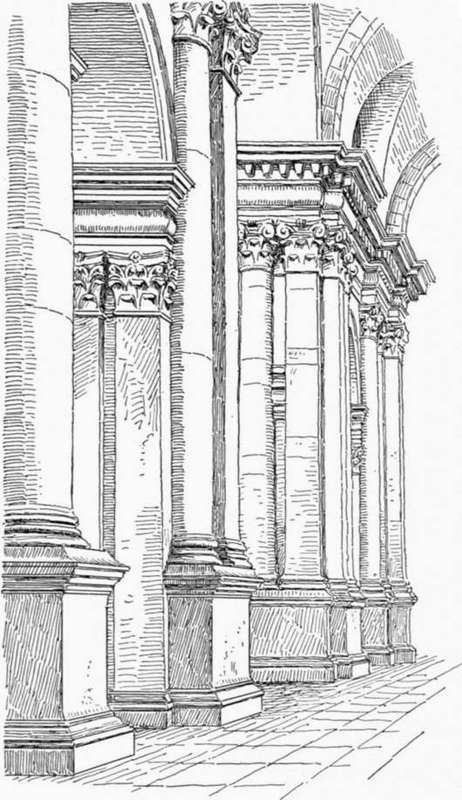
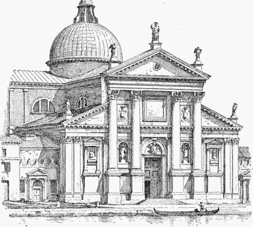

Church Architecture Of The Roman Renaissance. Part 8
Description
This section is from the book "Character Of Renaissance Architecture", by Charles Herbert Moore. Also available from Amazon: Character of Renaissance Architecture.
Church Architecture Of The Roman Renaissance. Part 8
Palladio was the first architect of the Renaissance who was not at any time either a painter or a sculptor. He begins his well-known book1 as follows : " Guided by natural inclination, I began in my earliest years to devote myself to the study of architecture, and having been always of the opinion that the ancient Romans were in building, as in many other things, far in advance of all those who came after them, I took for my master and guide Vitruvius, who is the only ancient writer on this art, and I set myself to the investigation of the remains of the ancient edifices which, injured by time and the violence of barbarians, are still extant. And finding them much more worthy of attention than I at first thought, I began with great diligence to measure most minutely every part of them. I became so ardent an investigator, not having known with what judgment and fine proportion they had been wrought, that not once only, but many times, I visited different parts of Italy and elsewhere, in order to understand and delineate them completely. And seeing how far the common manner of building differs from what I have observed in the ancient edifices, and read in Vitru-vius, and in Leon Batista Alberti, and in other excellent writers since Vitruvius, and from that new manner which I have practised with much satisfaction, and which has been praised by those who profited by my work, it has seemed to me right, since man is not born for himself alone, but also to be useful to others, to publish the drawings of these edifices, which at the cost of much time and peril I have gathered; and to state briefly that which has seemed to me most worthy of consideration in them, together with those rules which I have observed, to the end that those who shall read my book may profit by such good as may be in it, and supply that which may be wanting (for much, perhaps, may be) so that, little by little, we may correct the strange abuses, the barbarous inventions, avoid the superfluous cost, and (what is more important) the various and continued deterioration which we see in so many buildings."
The implicit confidence of the neo-classicists in the art of Roman antiquity as the embodiment of all true principles of architectural design, and their unquestioning belief that mediaeval art was wholly false in principle and barbaric in character, have seldom been more naively expressed.
Of church architecture by Palladio we have two important buildings, San Giorgio Maggiore and the Redentore, both in Venice. The first of these stands on the island of San Giorgio, opposite the Piazzetta, and is a characteristic Palladian design, though some parts of the west front may have been added after the architect's death. This church is cruciform, and has barrel vaulting with interpenetrations for light, and a dome on pendentives over the crossing. The piers are heavy, with a single engaged column of the composite order, raised on a high pedestal, against each one, except at the crossing, where the columns are coupled with pilasters, while the wide archivolts rest on pairs of smaller pilasters of the Corinthian order, without pedestals (Fig. 53). Both columns and pilasters have strong entasis, and the frieze of the entablature is rounded in profile. In raising the great order on pedestals Pal-ladio conformed more closely to ancient Roman practice than Michael Angelo and Vig-nola had done; but the pedestals have a clumsy effect thus ranged along the nave, and their sharp angles are in the way of moving crowds of people. It is noticeable, too, that Palladio has introduced complete orders under the archivolts, giving an entablature to each pair of small pilasters. The entablature had before been omitted in this situation. The whole scheme shows in a marked degree how inappropriate is the use of classic orders in a church interior. The application of such orders to a building with aisles and a high nave obliges the designer to make awkward combinations, and to violate true classic usage in manifold ways, as we have already abundantly seen. He must associate large and small orders, and give them relationships and adjustments that belong to mediaeval, rather than to classic, composition. The fagade of this building (Fig. 54) has the merit of conforming in outline to the shape of the nave and aisles. It is the outline of the primitive Christian Roman basilica without any disguises in the way of reversed consoles over the aisle compartments, or divisions contradicting those of the interior. Instead of the superimposed orders of Vignola's west fronts, Palladio has here, in the nave compartment, one great order of engaged columns, on high pedestals, rising through the entablature of a small order of pilasters, which is carried across the whole front, reaching to the height of the aisles. The total scheme gives a suggestion of mediaeval organic composition, but has no real organic character pertaining to the building.
Fig. 53.—Orders of San Giorgio.
Fig. 54. — Facade of San Giorgio.
In the facade of San Francesco della Vigna, also in Venice, and by the same architect, the design of San Giorgio is repeated, with some notable changes in detail. In this case the small order, as well as the larger one, consists of columns, except that on each angle a pilaster takes the place of a column, and both orders rise from the same level, the smaller one resting on a continuous podium, and the larger one on pedestals which are ressauts of the podium. The entablature of the small order is here not continuous, but is broken by the nave compartment, though a fragment of it is inserted in the central bay of this compartment over the small columns that flank the portal.
Continue to:
- prev: Church Architecture Of The Roman Renaissance. Part 7
- Table of Contents
- next: Church Architecture Of The Roman Renaissance. Part 9